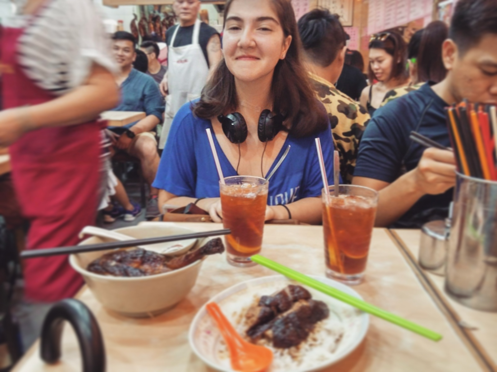
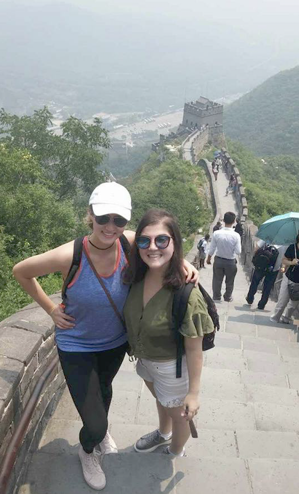
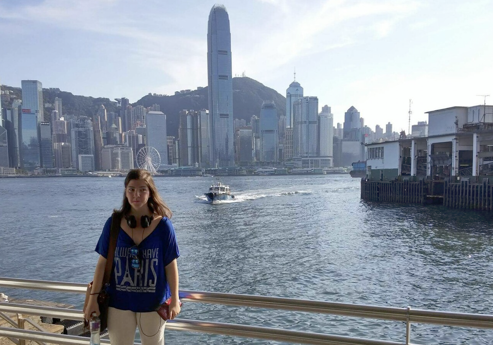
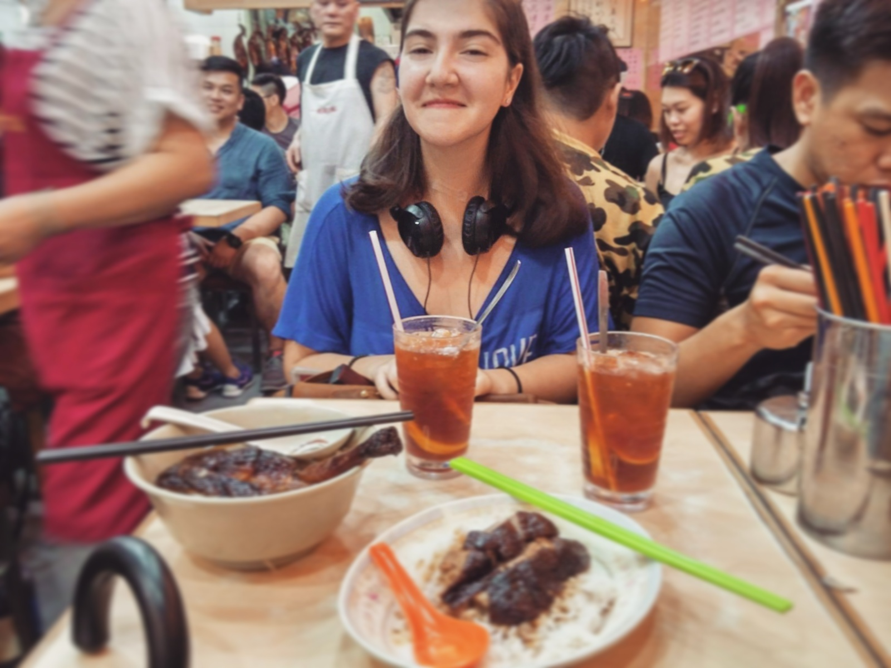
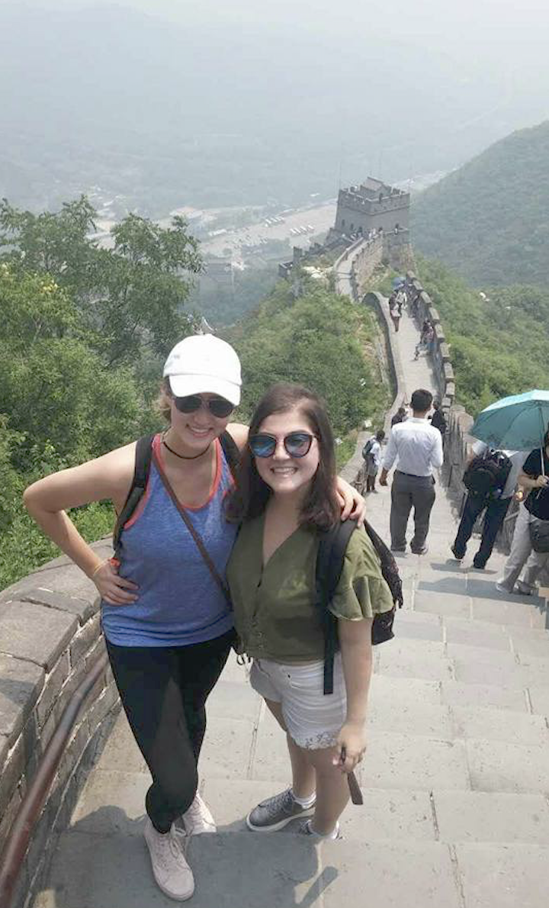
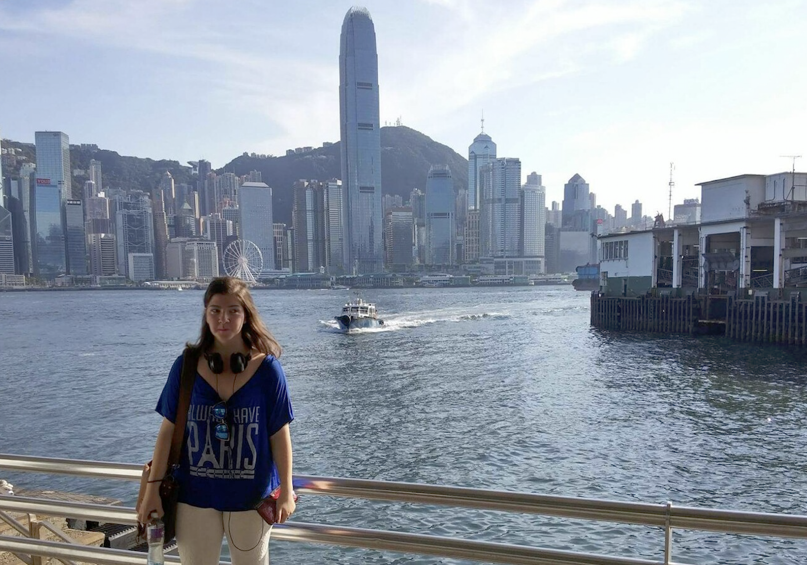

Hello! It is nice to meet you.
Here is a bit about me:
I am from Turkey. I attended Uskudar American Academy in high school, in Istanbul and graduated at 2015. Currently I am studying in UC Berkeley as a junior double majoring in Computer Science and Economics.
I enjoy music a lot. I can play piano, guitar and flute. I also love playing chess, swimming, and reading. Two of my favorite books of all time are Homo Sapiens and another one is the Count of Monte Cristo . I would definitely recommend them both. I have traveled to over 30 countries, lived in Hong Kong for a semester and last year I spent my summer in China! I like learning new languages. I speak Turkish, Spanish, and Mandarin Chinese. I've always wanted to learn Italian and visit Florence.
Since 2016, I am a scholar of UC Berkeley's Huang Program . I received a scholarship to study and work in China for two summers. Last summer I attended an intensive Chinese program in Beijing Normal University (北京师范大学) in coordination with Princeton in Beijing Program, where I had a chance to learn more about the culture and daily life of Beijing, visit amazing sites and practice my Chinese.
 





This semester, I am taking fun classes like Intro to Artificial Intelligence (CS188), Probability and Random Processes (EE126) and Financial Economics (Econ136), also taking the Machine Learning decal and iOS decal, and auditing an Advanced Chinese class! I am also on the course staff for some of my favorite classes in Berkeley: Efficient Algorithms and Intractable Problems (CS170), Discrete Math and Probability Theory (CS70), Structure and Interpretation of Computer Programs (CS61A) and Intro to Teaching Computer Science (CS370)! I especially enjoy teaching Discrete Math and Probability Theory (CS70). Last summer I was a student instructor (GSI) for CS70 and I continue to be on the staff for the 3rd semester.
Apart from classes, I am working with Computer Science Mentors (CSM) on campus as a Senior Mentor for CS70 and an Associate Mentor for CS61A. I am also the vice president of Prytanean Women's Honor Society as well as a member of Omicron Delta Epsilon , International Economics Honor Society of UC Berkeley.
I am particularly interested in Artifical Intelligence and Machine Learning, as well as financial economics and risk management. This semester I am learning R and more about machine learning through the Machine Learning decal! Currently I am working on developing my first VR game using Unity as well as learning more about mobile development with XCode. Hopefully by the end of the semester I'll be able to pitch my first app to app store!